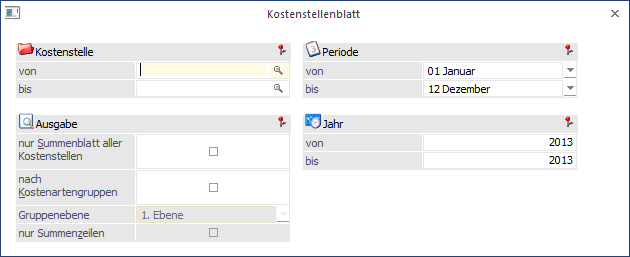
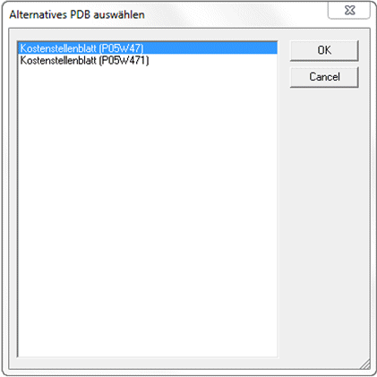
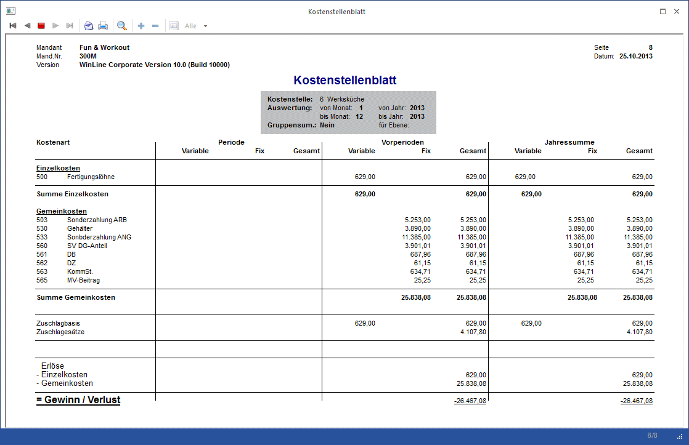

Um das Kostenstellenblatt abzurufen, wählen Sie den Menüpunkt
1 Auswertungen
1 Kostenstellenblatt
oder Schnellaufruf
1 STRG + K
an.

Selektionskriterien
Ø Kostenstelle
Sie können den Bereich der Kostenstellen eingrenzen, für den die Auswertung erfolgen soll. Außerdem wird geprüft, ob der Benutzer die Berechtigung hat (WinLine KORE/Stammdaten/Kostenstellen) die eingegebene Kostenstelle zu verwenden.
Ø Summierung
ü Nur Summenblatt aller KSt
Ist
diese Option aktiviert, werden für die Selektion keine
Einzelkostenstellenblätter gedruckt, sondern ein Summenblatt über alle
Kostenstellen.
ü Nach Kostenartengruppen:
Es
kann nach Kostenartengruppen summiert werden. Geben Sie die Gruppenebene ein für
die eine Summierung erfolgen soll.
ü Nur Summenzeilen:
Sie können
wählen ob Sie die Detailzeilen der Kostenarten sehen möchten oder nur die
Summenzeilen auf Gruppenebene.
Ø Periode von - bis
Einschränkung der Perioden für die das Kostenstellenblatt ausgegeben werden soll.
Ø Jahr von - bis
Einschränkung auf das Jahr, indem das Kostenstellenblatt ausgegeben werden sollen. (bei abweichendem Wirtschaftsjahr)
Hinweis
Für diese Auswertung können Sie zwischen zwei Formularen alternativ wählen. Sobald Sie die Auswertung mit F5 oder dem Ausgabebutton bestätigt haben, erhalten Sie untenstehendes Fenster zur Auswahl:

ü P05W47:
Kostenstellenblatt mit
Anzeige der Periode, Vorperiode, Jahressumme getrennt in variable, fixe und
Gesamtkosten.
ü P05W471:
Alternatives
Kostenstellenblatt mit Anzeige der Periode, Einheiten, Jahressumme. Aus
Platzgründen wird hier auf die Anzeige der Vorperiode verzichtet.

Achtung
Wenn bei der Periodenauswahl das gesamte Wirtschaftsjahr eingeschränkt wird, dann steht in der Spalte "Periode" die letzte Periode und in der Spalte "Vorperioden" die Perioden 1-11. Wird ein anderer Zeitraum eingegeben, dann werden in der Spalte "Periode" sämtliche Perioden, die in der Periodeneinschränkung liegen und in der Spalte "Vorperiode" alle Perioden des aktuellen Wirtschaftsjahres, die vor der Einschränkung liegen angezeigt.
Beispiel
Bei einer Einschränkung auf die Perioden 5-11 steht in der Spalte "Vorperioden" die Perioden 1-4, in der Spalte "Perioden" 5-11; in der Jahressumme werden natürlich die Perioden 1-12 angezeigt.